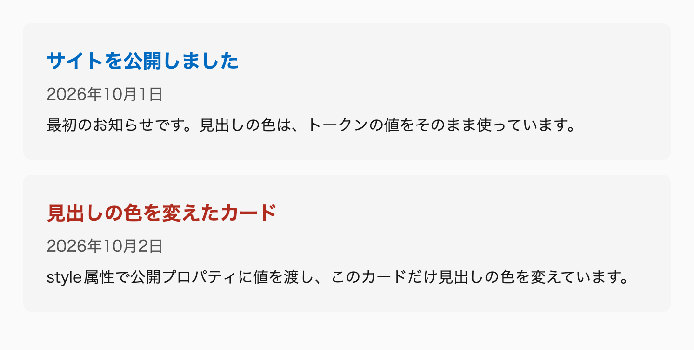

CSSを実務で書いていると、同じような困りごとに何度も出会います。ボタンの余白を直したら、別のページの見出しまで動くことがあります。同じカードの部品なのに、メインの列とサイドバーで別々のCSSが書かれていることもあります。デザインカンプどおりに組んだ一覧が、長い見出しや画像のない記事が入った途端に崩れることや、書いた宣言が効かない理由を説明できず、!important を足して済ませることもあるでしょう。
こうした問題の原因は、個々の書き間違いより手前にあることがほとんどです。1つは、カスケードや継承、レイアウトの計算の仕組みを知らないまま、見た目が合うまで値を足していることです。仕組みを知らなければ、宣言がなぜ効かないのか、なぜほかの場所まで変わったのかを説明できません。もう1つは、部品がどこまでの見た目に責任を持ち、どの値を外から変えてよいのかを決めないまま書いていることです。責任の範囲が決まっていないと、同じ部品でも置き場所ごとに上書きが積み重なり、関わる人が増えるほど影響を追えなくなります。
本書は、この2つの原因に、CSSの仕組みの理解と、実務で使える書き方の規約の両面から答えるための本です。仕組みを知っていれば、思いどおりにならない理由を自分で突き止められます。規約があれば、チームの誰が書いても、同じ理由で同じ書き方を選べます。
本書は、3つのことに取り組みます。1つ目は、マージンの相殺、インライン要素のベースライン、display の内側と外側の表示種別のように、知っているつもりで誤解しやすい古くからの仕組みを、仕様にもとづいて説明し直すことです。崩れた表示の原因の多くは、こうした基礎の仕組みで説明がつきます。
2つ目は、ここ数年で使えるようになった機能と、それを前提にした書き方を、理由とともに示すことです。@scope、カスケードレイヤー、コンテナクエリ、:has() は、部品の範囲や優先順位を、命名の注意ではなくブラウザの仕組みで守るための道具です。新しい機能を紹介するだけでなく、古い書き方のどこに問題があり、新しい書き方で何が解決するのかを示します。
3つ目は、新旧の知識を組み合わせて、保守しやすく崩れにくいCSSを書くための判断の基準を、ルールとして示すことです。各ルールには理由を添え、そのルールが仕様上の制約なのか、条件つきの判断なのか、本書が選んだ規約なのかも区別しています。理由と性質が分かれば、ルールが想定していない場面でも、同じ考え方で判断できます。
本書を読み終えると、崩れた表示の原因を、カスケードとレイアウトの仕組みから説明できるようになります。宣言が効かないときに詳細度とレイヤーの順位を確かめ、要素がはみ出したときに大きさを決めている規則を突き止める、という手順で原因を探せます。
部品については、どこで部品を分け、外から変えてよい値をどれにするかを決められるようになります。長い見出し、画像のない記事、件数の変化、置き場所の幅の変化に対して、どの部品が何を受け持つかを、書く前に判断できます。
チームについては、内容や画面幅が変わるサイトに、共有できる規約を導入できるようになります。本書のルールには理由と性質を添えているので、チームの事情に合わせて採り入れるものと置き換えるものを選び、レビューの根拠として使えます。
CSSの難しさの多くは、仕組みを知ることで説明がつくものです。そして、デザインをコードで思いどおりに表現できれば、ほかの言語にはない面白さを味わえます。本書が、その面白さにたどり着くための手がかりになれば幸いです。
続けて、本書の対象読者と全体の構成を「本書について」で確かめてください。本書の書き方を先に手元で動かしたいときは、「最小の構成で始める」の課題から始められます※1。本書がいまの方針を採る背景にあるIE11のサポート終了やAIの普及は、「本書について」で述べます。
本書は、実務でCSSを書く人のためのコーディングガイドラインです。CSSの記法と、その記法を選ぶ理由になる知識を、1冊の技術書の分量でまとめています。各節では、なぜそう書くのかを文章で説明し、最後に守るべきルールを一覧にしています。
本書のルールは、私が実務で使っている書き方をもとにしています。考え方や実装、日々の案件での判断を、1つの体系に整理し直したものです。
そのため、本書のルールには性質の違うものが混ざっています。守らないと表示の崩れやアクセシビリティの問題が起きる、仕様やブラウザの挙動にもとづく制約があります。状況とトレードオフで決まり、適用する条件がある実装上の判断もあります。どちらで書いても正しく動くなかから、保守のしやすさや書き方の統一のために私が選んだ規約もあります。各ルールがどれに当たるかは、ルールごとに「性質」として示しています※1。
主な読者として想定しているのは、HTMLとCSSの基本的な構文は書けるものの、書き方の判断に迷うことがある実務1〜3年目のコーダーです。セレクタやプロパティの書き方そのものは説明しません。その代わり、カスケードや詳細度、コンテナサイズクエリの副作用のように、知っているつもりでも誤解しやすい仕組みを説明し直しています。
経験を積んだ方には、チームで書き方をそろえるときの根拠として使えます。各ルールに理由を添えているので、レビューで指摘するときの説明にもそのまま使えます。
題材は、コーポレートサイトやランディングページ、メディアサイトのようなWebサイト制作です。静的なサイトとCMSの両方を扱います。特定のフレームワークに依存しない書き方を基本にしているので、AstroやVue、Reactのコンポーネントにもそのまま当てはめられます。
本書を読み終えて判断できるようになる3つのこと（崩れの原因の説明、部品の境界と公開する値、チームの規約の導入）は、「はじめに」で説明しています。ここでは、それぞれをどの部で身につけるかを示します。
1つ目の判断の土台は、第II部の基礎編で扱うカスケードとレイアウトの仕組みです。2つ目は、第III部の設計編で、部品の範囲を @scope で区切り、値を公開プロパティで受け渡す方法として身につけます。第IV部の実装編では、その部品を長い見出し、画像の欠け、件数や置き場所の幅の変化に耐えるように組み立てます。3つ目は、第V部の運用編で、Stylelintとレビューを使ってチームの規約として定着させる方法を扱います。
本書は6つの部と21の章で構成しています。前から順に読めるように並べていますが、必要な章だけを拾い読みしてもかまいません※2。
「はじめに」には、このページのほかに4つのページを置いています。読む順は、本書を書いた理由の「はじめに」、このページ、本書の書き方を試せる「最小の構成で始める」、各ページの約束事をまとめた「本書の読み方」、スタイルを素のCSSで書く理由を述べた「素のCSSで書く理由」です。
巻末には、付録A「ルール一覧（巻3）」、付録B「モダンな書き方への置き換え表（巻3）」、付録C「Sassの機能を素のCSSで置き換える（巻3）」、付録D「レビューのチェックリスト（巻3）」を用意しています。続いて、付録E「用語集（巻3）」、付録F「更新履歴（巻3）」、付録G「参考資料（巻3）」、付録H「CSS-in-JSと素のCSSの比較（巻3）」、付録I「デモの共通トークン（巻3）」、付録J「AIツールで使う（巻3）」、付録K「困りごとから引く（巻3）」があります。デモのCSSは色や文字の大きさをトークンで参照しているので、コード例やデモを手元で試すときは、付録Iで値を確かめてください。
各章の最初には概要のページがあり、その章で扱う問題と、各節の要点をまとめています。どこから読むか迷ったら、概要のページから目を通してください。
本書のルールは、2026年9月時点の私の書き方にもとづいています。CSSは今も新しい機能が増え続けていて、ブラウザの対応状況も変わります。そのため、時間とともに変わる記述には、確認した年月を添えています。ブラウザの対応状況は、Web標準の対応データ（web-features）から自動で表示しています。
本書にはバージョン番号を付けています。ルールを変えたり削除したりしたときはメジャーバージョンを、ルールを追加したときはマイナーバージョンを上げます。ただし、執筆中の 0.x の間は、ルールを変えたり削除したりしたときもマイナーバージョンを上げます。すべての章の内容を私が確認した時点で、1.0.0 にする予定です。変更の内容は、付録F「更新履歴（巻3）」に記録します。
本書は、人が読む技術書であると同時に、AIのコーディングエージェントに参照させるドキュメントも兼ねています。AIにCSSを書かせると、100vh や min-width のメディアクエリのような古い書き方がよく出てきます。本書のルールをAIに読ませれば、どの規約で書くかをIDで指示できます。ただし、読ませたからといって、生成されたコードがルールに沿うとは限りません。出力はStylelintとレビューで確かめる必要があります。
各ページの「ガイドライン」と付録A「ルール一覧（巻3）」は、AI向けのスキルやMCPサーバーと同じデータから作っているので、人が読むルールとAIに渡すルールは食い違いません※3。
AIが1ページだけを読む場合に備えて、各ページは単体で意味が通るように書いています。ほかのページの内容に触れるときは、リンクと一言の要約を添えています。
本書が仕組みの理解と規約の両面から答える方針を採るのには、ここ数年の環境の変化が関わっています。1つは、2022年6月16日（日本時間）に、Windows 10の主なエディションでInternet Explorer 11（IE11）のデスクトップアプリケーションのサポートが終了したことです。それまで多くの案件はIE11での表示を求められ、カスタムプロパティやGridのような機能を、フォールバックなしでは使えませんでした。その後もコンテナクエリ、カスケードレイヤー、:has()、ネストが主要なブラウザに実装され、数年前には書けなかったCSSが書けるようになっています。一方で、機能が次々に増えたことで全体を把握しにくくなり、IE11の時代の制約を前提にした書き方が今も多くの現場で続いています。本書が新しい書き方を勧める箇所の多くは、この差を埋めるためのものです。
同じ時期に、React、Vue、Astroのようなコンポーネントのフレームワークや、Tailwind CSSのようなユーティリティファーストの手法が広まりました。ただ、道具が増えても、ブラウザが最後に解釈するのはCSSです。部品の責任の範囲を決めるというBEMやOOCSSの考え方は今も変わらず、変わったのは、その範囲を命名の規則ではなく @scope やカスケードレイヤーで守れるようになったことです※4。
さらに、AIがHTMLとCSSを書くようになり、書き方の規約は、人とAIが共有する土台にもなりました。規約がなければ、AIはページごとにその場で考えた書き方を出力するからです。AIは既存のコードに倣って書くので、コードを安く書けるようになった今も、コードの質は次に書かれるコードの質を左右します※5※6。
本書の文章は、クリエイティブ・コモンズ 表示 4.0 国際（CC BY 4.0）で公開しています。出典を示せば、転載や翻訳、改変ができます。
本書のコード例は、MIT No Attribution（MIT-0）で公開しています。著作権の表示も不要なので、自分のプロジェクトにそのまま貼り付けて使ってください。
本書の書き方を手元で試すには、HTML、エントリーポイントのCSS、kiso.css、トークン、コンポーネントの5種類のファイルがあれば足ります。このページの前半では、この構成でお知らせのカードを表示し、見出しの色を1つ変えるところまでを試します。
構成には、カスケードレイヤー、トークンの階層、公開プロパティと内部プロパティ、本書独自の命名といった設計の要素が含まれています。前半では、それぞれの役割を一言で示すだけにとどめます。仕組みは本編で順に説明するので、詳しい読み方は、本編を読み進めてから後半の「この構成の読み方」以降に戻って確かめてください。前半で出てくる名前の意味は、後半の「命名の早見表」で引けます。
ファイルは次のように置きます。kiso.cssは、kiso.cssのGitHubのリポジトリからダウンロードし、エントリーポイントの style.css と同じ場所に置きます。
index.html
css/
├── style.css … エントリーポイント
├── kiso.css … リセットCSS
├── tokens/
│ ├── colors.css … 色のトークン
│ └── sizes.css … 余白と角丸のトークン
└── components/
└── news-card.css … コンポーネントHTMLは、エントリーポイントの style.css だけを読み込みます。カードのルートの要素には class="scoped news-card" を付けます。これがコンポーネントの目印です。
<!doctype html>
<html lang="ja">
<head>
<meta charset="utf-8">
<meta name="viewport" content="width=device-width, initial-scale=1">
<title>最小の構成</title>
<link rel="stylesheet" href="css/style.css">
</head>
<body>
<article class="scoped news-card">
<h2>サイトを公開しました</h2>
<time datetime="2026-10-01">2026年10月1日</time>
<p>最初のお知らせです。</p>
</article>
</body>
</html>エントリーポイントには、レイヤーの順番の宣言と、各ファイルの読み込みだけを書きます。
/**
* サイト全体のスタイルの入り口。
* レイヤーの順番を宣言し、各ファイルをレイヤーに割り当てる。
*/
@layer tokens, reset, base, vendors, compositions, pages, components, patterns, utilities;
@import url("kiso.css") layer(reset);
@import url("./tokens/colors.css") layer(tokens);
@import url("./tokens/sizes.css") layer(tokens);
@import url("./components/news-card.css") layer(components);トークンのファイルには、サイト全体で使う色と余白の値を書きます。
/**
* 色のトークン。
* プリミティブの色と、役割を表すセマンティクスの色を定義する。
*/
:root {
--color--neutral--100: oklch(97% 0 0deg);
--color--neutral--600: oklch(43.9% 0 0deg);
--color--accent--600: oklch(52% 0.16 250deg);
--background--surface: var(--color--neutral--100);
--foreground--accent: var(--color--accent--600);
--foreground--muted: var(--color--neutral--600);
}/**
* 余白と角丸のトークン。
* 余白はピクセル相当の数値で定義し、使う場所で単位に変換する。
*/
:root {
--spacing--xxs: 8;
--spacing--md: 24;
--rounded--md: 8px;
}コンポーネントのファイルには、カード1つ分のスタイルを書きます。
/**
* お知らせのカード。
* 一覧としての並べ方は、置く側のレイアウトが受け持つ。
*
* @prop {color} --news-card--accent [var(--foreground--accent)] - 見出しの色
*
* @example
* <article class="scoped news-card" style="--news-card--accent: oklch(50% 0.17 30deg)">
* ...
* </article>
*/
@scope (.scoped.news-card) to (.scoped) {
:scope {
--_accent: var(--news-card--accent, var(--foreground--accent));
display: block grid;
gap: calc(var(--spacing--xxs) * 1px);
padding: calc(var(--spacing--md) * 1px);
border-radius: var(--rounded--md);
background-color: var(--background--surface);
}
h2 {
color: var(--_accent);
font-size: calc(20 / 16 * 1rem);
}
time {
color: var(--foreground--muted);
}
}index.html をブラウザで開くと、淡い灰色の背景のカードに、青い見出し、日付、本文が表示されます。背景色や見出しの色が付かないときは、開発者ツールのネットワークのパネルで、CSSのファイルがすべて読み込まれているかを確かめてください。
カードの見出しの色は、使う側から変えられるようにしてあります。index.html のカードの article 要素に、style="--news-card--accent: oklch(50% 0.17 30deg)" のように属性を足すと、そのカードの見出しだけが赤みのある色に変わります。コンポーネントのCSSは書き換えません。
次のデモは、この構成と同じCSSで、カードを2枚並べたものです。2枚目のカードにだけ、style 属性で --news-card--accent に値を渡しています。1枚目の見出しはトークンの青、2枚目の見出しは渡した色で表示されます。

幅 720px
--news-card--accent は、このカードが外から値を受け取るために用意した入り口です。値を渡さなかった1枚目は、コンポーネントに書いたデフォルトの色を使います。入り口を用意した値だけを外から変え、それ以外の見た目はコンポーネントの中で決めるのが、本書の部品の作り方です※1。
ここまでで、本書の構成を手元で動かせました。以降は参照のための説明です。本編のコード例を試すときや、構成の各部分の意味を確かめたくなったときに戻ってください。
エントリーポイントの先頭の @layer 文は、9つのレイヤーの順番を決めています。その後ろの @import は、各ファイルを layer() で指定したレイヤーに割り当てます。レイヤーの順番は先頭の @layer 文で決まるので、@import を並べる順番には左右されません※2。css ディレクトリの中は、このレイヤーの分類に合わせてディレクトリを分けています。
コンポーネントのファイルには @layer components { … } を書いていません。エントリーポイントの @import に layer(components) を付けているので、ファイルの中身がすべて components レイヤーに入ります。<head> の中の <style> のように、@import で読み込まないCSSでは、@layer を自分で書きます。
トークンの色は、プリミティブ（--color--…）と、役割を表すセマンティクス（--foreground--… など）の2層にしています。余白のトークンは単位を付けずに定義し、使う場所で単位に変換します※3。
コンポーネントのスタイルは、@scope (.scoped.<名前>) to (.scoped) の中に書きます。子要素は h2 や time のようなタイプセレクタで選ぶので、クラスを付けていません。_ で始まる子クラスを付けるのは、同じ種類の要素を役割で区別するときと、div と span に役割を示すときだけです※4。外から変えてよい見出しの色は、公開プロパティ --news-card--accent として受け取り、:scope で内部プロパティ --_accent に受けます。渡されなかったときのデフォルト値は、var() のフォールバックに書いています※5。
デモのCSSのタブは、本文のコード例と違い、省略のない全体です。トークンを @layer tokens { … } で、コンポーネントを @layer components { … } で包み、1つのファイルにまとめています。カードを並べるための余白は、置く側の demo-layout のスコープに書いています。デモの枠には、レイヤーの順番の宣言と、reset レイヤーに入れたkiso.cssを読み込んでいるので、CSSのタブにはエントリーポイントにあたる記述がありません。
この構成は、ビルドツールを用意せずに本書の書き方を試すための学習用です。エントリーポイントの @import をブラウザがそのまま読むので、各ファイルの読み込みが直列になり、最初の表示が遅れます。実務では、同じファイル構成のまま、ビルドツールで @import を展開して1つのCSSにしてから配信します。本書のルールの import-resolved-at-build も、この展開を求めています。学習や検証のため、ビルドせずに試す場合だけを例外にしています（「4-3 カスケードレイヤーで順位を決める」）。
本文のコード例は、説明に必要な部分だけを抜き出したものです。「本書の読み方」で説明しているとおり、ほとんどのコード例ではカスケードレイヤー（@layer）の記述を省略しています。._main-link のように _ で始まるクラスのルールは、@scope の中に書く前提で、@scope の記述も省略していることがあります。
コード例が参照しているトークンも、別のファイルで定義されている前提です。たとえば color: var(--foreground--muted); だけを貼り付けると、--foreground--muted がどこにも定義されていないので、var() の参照が無効になります。このとき color はエラーにならず、親から継承した色のまま表示されます。説明している機能が動かないように見えても、原因はトークンがないことかもしれません。
本文のコード例を試すときは、この構成のコンポーネントのファイルへ貼り付け、コード例が参照するトークンを「10-4 デザイントークン（巻2）」の定義から足してください。この構成のトークンは、カードに必要なものだけを定義しています。--foreground--base のような色のトークンや、--ease--out-quint のようなイージングのトークンも、そのページで定義しています。
本文では @import url("kiso.css") layer(reset); と書いていますが、ブラウザはこの kiso.css を、書いたCSSファイルと同じ場所にあるファイルのURLとして読みます。課題1でファイルを style.css の隣に置いたのは、そのためです。npmでパッケージをインストールしただけでは、node_modules の中のファイルは読まれません。
ファイルを置かずに、CDNのURLを直接書く方法もあります。kiso.cssのREADMEは、jsDelivrで配信しているファイルのURLを案内しています。URLにバージョンを書いておけば、kiso.cssが更新されても、知らないうちに見た目が変わることはありません。
@layer tokens, reset, base, vendors, compositions, pages, components, patterns, utilities;
@import url("https://cdn.jsdelivr.net/npm/kiso.css@1.2.4/kiso.css") layer(reset);npmでインストールする場合（npm install kiso.css）は、CSSの @import でパッケージ名を解決するビルドツールが必要です。Viteは、CSSの @import を postcss-import で展開し、その過程で node_modules の中のパッケージも探します。 この場合は、エントリーポイントの @import url("kiso.css") layer(reset); が、パッケージに含まれる kiso.css を指します。
同じ @import url("kiso.css") でも、ブラウザが直接読むときは隣にあるファイルを、ビルドツールが処理するときはパッケージを指します。手元で試すときに kiso.css が読み込まれていないようなら、開発者ツールのネットワークのパネルで、どのURLを読みにいったのかを確かめてください。
本書のコード例には、CSSの構文ではなく、本書の規約で決めている名前が多く出てきます。どれも先頭の記号で種類を見分けられるようにしています。接頭辞のないコンポジションとパターンは、配置の名前か役割の名前かで見分けます。各行の詳しい説明は、右の列のページにあります。
| 記法 | 例 | 意味 | 詳しい節 |
|---|---|---|---|
scoped <名前> |
class="scoped news-card" |
コンポーネントのルート。scoped は、外側のスコープの下限にもなる |
9-3（巻2）、9-1（巻2） |
scoped page-<スラッグ> |
class="scoped page-about" |
ページ固有のスタイルのルート | 9-3（巻2） |
._<名前> |
._main-link、._sub-link |
コンポーネントの子要素のうち、同じ種類の要素を役割で区別するものと、div と span の役割を示すもの。スコープの中だけで意味を持つ |
9-1（巻2）、10-2（巻2） |
.-<名前> |
.-visually-hidden、.-fluid-text--md |
ユーティリティ。段階や種類は -- で続ける |
9-1（巻2）、10-3（巻2） |
| 接頭辞なし（配置の名前） | .cluster、.switcher |
コンポジション（配置のパターン） | 9-1（巻2）、10-3（巻2） |
| 接頭辞なし（役割の名前） | .section-heading、.icon |
パターン（静的な見た目の断片）。コンポーネントが変える値は --<パターン>--<プロパティ> で受け取る |
9-1（巻2）、10-3（巻2） |
--<分類>--<名前> |
--color--accent--600、--spacing--md |
デザイントークン | 10-4（巻2） |
--<役割>--<バリエーション> |
--foreground--muted |
役割を表す色のトークン | 10-4（巻2） |
--<コンポーネント>--<プロパティ> |
--news-card--accent |
公開プロパティ。外から値を渡してよい | 10-5（巻2） |
--_<名前> |
--_accent |
内部プロパティ。コンポーネントの中だけで使う | 10-5（巻2） |
--_<名前>--<状態> |
--_background--hocus |
状態やモードごとの値 | 10-5（巻2） |
--<名前>（値として使う名前） |
@keyframes --fade-in |
自分で付けて値として使う名前 | 9-1（巻2） |
data-variant |
data-variant="featured" |
コンポーネントのバリエーション | 9-1（巻2） |
| 擬似クラス、ARIA属性 | :checked、[aria-selected="true"] |
状態。.is-active のような状態クラスは使わない |
17-3（巻3） |
| 9つのレイヤー名 | tokens、components |
レイヤー名。値として使わないので -- を付けない |
4-3 |
内部プロパティの --_ には、種類ごとの接頭辞もあります。コンポジションは --_c--、パターンは --_p--、ユーティリティは --_u--、ベーススタイルは --_b-- で始めます。コンポーネントの内部プロパティと名前がぶつからないようにするためです。
本書が勧めない書き方の多くは、CSSとして正しく動きます。BEMの .card__title、display: flex、margin-top、@media (min-width: 768px) は、どれも有効なCSSで、ブラウザも問題なく表示します。本書がこれらを使わないのは、読みやすさや変更のしやすさ、多言語への対応のような保守の理由からです。
そのため、本書のルールの「必須」や「禁止」は、本書を採用したプロジェクトの中での約束を表しています。CSSの仕様に反しているという意味ではありません。チームで使うときは、ルールの理由に納得したうえで、規約として合意することが前提になります。
一方で、仕様上の制約から決めているルールもあります。@import をほかのルールの後ろに書くと無視されることや、宣言していないレイヤー名が新しいレイヤーになることは、書き方の好みではなく、ブラウザの動作です。各ルールがどちらに当たるかは、ルールごとの「性質」で確かめられます※6。
本書の節のページは、共通の基本の構成と約束事で書いています。このページでは、ページの構成、初めて読むときの順番、ルールの読み方、コード例のラベル、デモの操作、ブラウザの対応状況の表示、AIでの使い方を順に説明します。先に一度読んでおくと、どの章から読み始めても表記に迷いません。
節のページは、冒頭の数段落でその節の結論を先に示し、最後に「ガイドライン」と「参考リンク」を置くという基本の構成を持っています。その間の進め方は、節の題材に合わせて選んでいます。コード例とデモは、説明する見出しの直下に置いています。
仕組みを理解する節は、実際に起きる表示から始め、どう表示されるかを予測したうえで仕組みを説明し、デモで確かめます。手法を選ぶ節は、満たしたい要件を挙げ、選択肢を比べてから、どれを選ぶかの判断を示します。実装する節は、完成形を先に見せ、組み立ての手順と表示の検証を経て、注意点を添えます。本書独自の規約を導入する節は、目的、約束の中身、例外、チームでの運用の順に書き、採用したときに増える手間も示します。このほか、よくある書き方の問題点から本書の解決策へ進む節もあります。
ページの最後にある「ガイドライン」は、その節で守るべきルールの一覧です。時間がないときは、ここだけを確認してもかまいません。ルールの理由を知りたいときは、本文に戻ってください。ただし、第I部でCSSや設計の考え方を述べる節にはルールを置いていないので、「ガイドライン」もありません。
第21章の演習の節は、別の形で進みます。各節で要件を1つ変え、直す場所を予想してから解説を読み、最後に判断を問う問題と答えで振り返ります。演習では新しいルールを置かず、「ガイドライン」の代わりに、その節で使ったルールを掲載ページへのリンク付きで並べています。
本書は、前から順に読めるように章を並べていますが、初めて読むときにすべての節を読む必要はありません。次の表の「初めて読むとき」の節を読めば、本書の規約で部品を1つ書き始められ、第21章「記事の一覧を作る（巻3）」の演習の前半（21-1〜21-4）に取り組めます。「必要になってから」の節は、作るものが決まったときや、演習で知らないルールを見つけたときに読んでください。
| 章 | 初めて読むとき | 必要になってから |
|---|---|---|
| 第1章「CSSのマインドセット」 | 1-1、1-2、1-3 | 1-4〜1-7 |
| 第2章「CSS設計の考え方」 | 2-1、2-3 | 2-2 |
| 第3章「デザインを再現する」 | 3-1 | 3-2 |
| 第4章「カスケードを制御する」 | 4-1〜4-5（すべて） | — |
| 第5章「擬似クラスと擬似要素」 | 5-1、5-2、5-3 | 5-4〜5-8 |
| 第6章「値と単位」 | 6-1、6-3 | 6-2、6-4、6-5 |
| 第7章「レイアウトの仕組み」 | 7-1〜7-5、7-7、7-8 | 7-6、7-9〜7-12 |
| 第8章「リセットとベーススタイル（巻2）」 | 8-1〜8-3（すべて） | — |
| 第9章「記法の規約（巻2）」 | 9-1、9-3、9-4、9-5 | 9-2、9-6〜9-9 |
| 第10章「コンポーネントとカスタムプロパティ（巻2）」 | 10-1〜10-5、21-4の前に10-6 | 10-7、10-8 |
| 第11章「レイアウトを組む（巻2）」 | 11-1〜11-4 | 11-5〜11-16 |
| 第12章「レイアウトコンポジション（巻2）」 | 概要の「目的から選ぶ」の表、12-1、12-11、12-2、12-5、12-6 | ほかの6つ |
| 第13章「レスポンシブデザイン（巻2）」 | 13-1〜13-5 | 13-6〜13-8 |
| 第14章「タイポグラフィと和文組版（巻3）」 | 14-3、14-4、14-5 | 14-1、14-2 |
| 第15章「色（巻3）」 | 15-1 | 15-2〜15-5 |
| 第16章「画像・装飾（巻3）」 | 16-1 | 16-2〜16-8 |
| 第17章「インタラクション（巻3）」 | 17-1、17-3、21-6の前に17-4 | 17-2、17-5〜17-7 |
| 第18章「モーション（巻3）」 | 18-1、18-2 | 18-3〜18-8 |
| 第19章「実務での運用（巻3）」 | 19-1 | 19-2〜19-6 |
| 第20章「AIにコーディングさせる（巻3）」 | AIを使う読者だけ 20-1、20-2 | 20-3〜20-8 |
| 第21章「記事の一覧を作る（巻3）」 | 21-1〜21-4 | 21-5〜21-8 |
高度な計算関数、if()、アンカーポジショニング、スクロールに合わせた動きのように、使う場面が限られる話題は、どれも「必要になってから」に入れています。各章の概要ページにも、同じ案内を「初めて読むとき」の見出しで置いています。
第11章と第12章は、節の数が多いので、読み方を少し詳しく書きます。
第11章「レイアウトを組む（巻2）」には16の節があり、固定ヘッダーや表、アンカーポジショニングのように、作るものが決まってから読めば足りる節を多く含みます。初めて読むときは、作るものの要件から通常フロー、Grid、Flexbox、float を選ぶ「11-1 レイアウト手法の選び方（巻2）」を読みます。続けて、章の概要が最初に押さえるルールを置いている「11-2 余白を設計する（巻2）」「11-3 サイズと内容の変化に耐える（巻2）」「11-4 はみ出しとスクロール（巻2）」を読みます。11-5以降は、その部品を作るときに章の概要から引きます。
第12章「レイアウトコンポジション（巻2）」は、章の概要で、必要なときに引く参照用の章と位置づけています。初めて読むときは、概要の「目的から選ぶ」の表で11のコンポジションの役割をつかみます。そのうえで、概要が先に読むよう勧めている基本の5つ、「12-1 stack（巻2）」「12-11 prose（巻2）」「12-2 cluster（巻2）」「12-5 sidebar（巻2）」「12-6 grid（巻2）」を読みます。switcher や masonry のような計算の多いページは、使う場面が来てから読めば足ります。
読み飛ばした節に戻るきっかけは、第21章の演習で作ります。演習の各節は、その節で使ったルールを掲載ページへのリンク付きで並べているので、知らないルールがあれば、そこから該当する節を読めます。
ルールには、「必須」「推奨」「非推奨」「禁止」の4段階の強度を付けています。「必須」と「禁止」は、各ルールの補足に書いた適用範囲と例外を除き、必ず守るルールです。補足の例外に当たるコードは違反ではないので、レビューやAIのチェックで指摘しません。「推奨」と「非推奨」は、基本的には従いますが、理由があれば外れてかまいません。外れるときは、その理由をコメントに残します。
強度とは別に、ルールの根拠がどこにあるかを「性質」として示しています。「仕様上の制約」は、CSS・HTML・ブラウザの振る舞いやWCAGから導かれるルールで、守らないと表示や操作が崩れます。「実装上の判断」は、状況とトレードオフで決まるルールです。適用する条件は、補足や本文に書いています。「本書の規約」は、命名やレイヤーの順番のように、一貫性のために本書が選んだ約束です。自分の案件に持ち帰るときは、仕様上の制約はそのまま使い、実装上の判断は条件が合うかを確かめ、本書の規約はチームの規約と見比べて選んでください。
各ルールには、no-vw-vh のような英語のIDを付けています。IDは章の構成が変わっても変えないので、レビューのコメントやAIへの指示で「no-vw-vh に違反しています」のように引用できます※1。
ルールによっては、「自動チェック」の欄にStylelintのルール名を書いています。本書のStylelintの設定を使えば、そのルールへの違反は機械的に見つけられます※2。
コード例のタイトルには、2種類のラベルを付けています。🙆♂ Recommended は本書が勧める書き方で、🙅♂ Not Recommended は避けるべき書き方です。避けるべき書き方には、コードの先頭行にも同じラベルをコメントで入れています。コードだけを切り出して読んだときにも、避けるべき例だと分かるようにするためです。
/* 🙅♂ Not Recommended */
._card {
padding-top: 16px;
}._card {
padding-block-start: 16px;
}🙆♂ Recommended のCSSは、本書のStylelintの設定ですべて検証しています。ラベルのないコード例は、計算式だけを示す場合など、完全なCSSになっていないものです。
本文のコード例では、説明に関係しない記述を省略しています。とくにカスケードレイヤー（@layer）の記述は、ほとんどのコード例で省略しています。省略した箇所は /* ... */ と書いています。クラス名が ._main-link のように _ で始まっている場合は、@scope の中に書く子要素のクラスです※3。
省略した記述をそろえた全体の形は、「最小の構成で始める」に1枚のカードを例にして示しています。その構成で定義しているトークンは、そのカードに必要な最小限のものだけです。本文のコード例を手元で試すときは、その構成のコンポーネントのファイルに貼り付け、コード例が参照するトークンを足してください。色や余白、イージングと再生時間のトークンは「10-4 デザイントークン（巻2）」で定義しています。
多くの節には、コードをその場で表示するデモがあります。デモは、ページとは切り離された枠（iframe）の中で表示しているので、デモのCSSがページに影響することはありません。枠の幅がそのままデモの画面幅になるので、メディアクエリも実際の画面と同じように動きます。
デモの上にあるボタンやスライダーで、表示の幅を変えられます。本文の幅より広い値を選ぶと、デモを横にスクロールして確認できます。デモの下のタブでは、表示に使っているCSSとHTMLを確認できます。
デモには、特に断りがない限り、本書が勧めるリセットCSS（kiso.css）とカスケードレイヤーの順序の宣言を読み込んでいます。ブラウザのデフォルトスタイルそのものを見せるデモでは、これらを読み込んでいません。
新しい機能を紹介する箇所には、ブラウザの対応状況を示す枠を置いています。表示は、Web標準の対応データ（web-features）の「Baseline」という指標にもとづいています。「広く利用可能」はすべての主要なブラウザで長く使えている機能、「新しく利用可能」は最近すべての主要なブラウザで使えるようになった機能、「一部のブラウザのみ」はまだ一部のブラウザでしか使えない機能です。
枠には、データのバージョンと確認した年月を書いています※4。
本書のルールは、AIのコーディングエージェントにも読ませられる形で提供する予定です。スキル、MCPサーバー、プラグインは、提供に向けて対応中のため、まだ利用できません（2026年10月時点）。提供を始めた後は、スキルとMCPサーバーを入れれば、CSSを書くときやレビューするときに、本書のルールを規約として指示できます※5。
ただし、スキルを読み込ませても、生成されたCSSがルールに沿うとは限りません。出力は、Stylelintとレビューで確かめる必要があります。AIへの指示でルールのIDを使うと、どのルールに従ってほしいのかを正確に伝えられます※6。
本書のコード例は、すべて素のCSSで書いています。ここでいう素のCSSは、CSSファイルにWeb標準の構文だけで書いたスタイルのことです。JavaScriptのオブジェクトで書くCSS-in-JSも、HTMLのクラス属性にユーティリティを並べるTailwind CSSも、Sassの独自の構文も使いません。ビルドの段階で @import を展開することはありますが、書く内容はブラウザが解釈するCSSそのものです。
本書が扱うのは、コーポレートサイト、ランディングページ、メディアサイトのようなWebサイト制作で、静的なサイトとCMSの両方を含みます。CMSのテンプレートが出力するHTMLや、編集者が書く本文には、JavaScriptでクラス名を生成する仕組みを持ち込めないことがあります。素のCSSなら、部品のルートにクラスを1つ付けるだけで、どちらの環境でも同じ書き方で部品の範囲を区切れます。
部品の範囲、スタイルどうしの優先順位、外から変えてよい値は、どの道具を選んでも決めなければならない設計の判断です。本書は、これらをブラウザの仕組みである @scope、カスケードレイヤー、カスタムプロパティで表します。特定のフレームワークやビルドの道具に依存しないので、案件ごとに道具が変わっても書き方を変えずに済みます。
本書の読者として想定している実務1〜3年目のコーダーにとって、カスケード、@scope、カスタムプロパティ、擬似クラスは、どの道具を使う現場に移っても役に立つ知識です。Tailwind CSSのクラスも、CSS-in-JSで書いたスタイルも、ブラウザが最後に解釈するのはCSSだからです。道具に固有の記法は道具を替えると使えなくなりますが、CSSの仕組みの知識は、道具が生成したCSSを読み解くときにも使えます。
そのため、VueやAstroのように、フレームワークが標準でスコープ付きのCSSを書く仕組みを備えているなら、それを使ってかまいません。その場合は @scope だけをフレームワークのスコープに置き換え、命名やカスケードレイヤーといったほかの規約はそのまま使います。
この判断は、AIにコードを書かせるときの規約にもなっています。本書のルール no-unrequested-css-framework は、プロジェクトで採用を決めていない限り、Tailwind CSSやCSS-in-JSを使わず、コンポーネントのクラスと @scope で書くことを求めます。AIは、指示がなくてもユーティリティだけで組む前提を持ち込むことがあるからです※1。
このルールが求めているのは、採用していない道具を持ち込まないことです。プロジェクトがTailwind CSSやCSS-in-JSを採用しているなら、その方針に従います※2。
ほかの道具と比べた詳しい根拠は、付録H「CSS-in-JSと素のCSSの比較（巻3）」で説明します。CSS-in-JSやStyleXの仕組み、型安全性、スコープとグローバルなスタイルの共存、公開プロパティによる部品の再利用、見た目のロジックの分担を比べています。比較には第4章と第10章で扱う仕組みが出てくるので、それらの章を読んでから戻ると判断しやすくなります。